Insérer et organiser tableaux, formes, images, en-têtes, pieds de page, SmartArt, équations, graphiques, zones de texte, symboles, numéros de page, liens, pages et sauts de section.
L’onglet Insertion regroupe les commandes qui permettent d’ajouter de nouveaux éléments dans un document Word : tableaux, images, formes, liens hypertexte, en-têtes, pieds de page et autres objets.
TableauxOrganiser des informations en lignes, colonnes et cellules.
IllustrationsAjouter des images, des formes et des graphiques SmartArt.
En-tête et pied de pageAjouter des informations répétées dans les marges du document.
À retenir : commencez par placer le curseur à l’endroit où l’élément doit être inséré, puis ouvrez l’onglet Insertion.
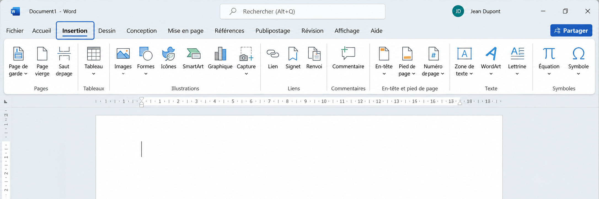
Repère visuel : l’onglet Insertion donne accès notamment aux tableaux, images, formes, SmartArt, graphiques, en-têtes, pieds de page, équations et symboles.
ÉTAPE 2 • TABLEAUX
Les tableaux
Un tableau permet d’organiser clairement des données. Le cours distingue trois éléments essentiels : la cellule, la ligne et la colonne.
2.1 Vocabulaire
CelluleZone située à l’intersection d’une ligne et d’une colonne.
LigneEnsemble horizontal de cellules.
ColonneEnsemble vertical de cellules.
2.2 Insérer un tableau
Placez le curseur à l’endroit où le tableau doit apparaître.
Ouvrez Insertion > Tableau.
Sélectionnez directement le nombre de lignes et de colonnes dans la grille, ou choisissez Insérer un tableau.
Dans la boîte de dialogue, indiquez le nombre de colonnes et le nombre de lignes, puis validez.
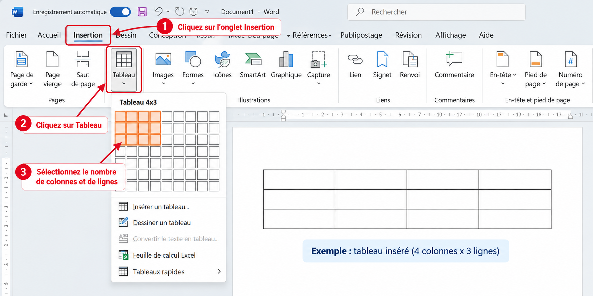
Repère visuel : ouvrez Insertion > Tableau, puis sélectionnez dans la grille le nombre de colonnes et de lignes souhaité.
2.3 Modifier un tableau existant
Lorsque le curseur est placé dans un tableau, Word affiche les outils spécifiques au tableau. Ils permettent de modifier sa structure et sa présentation.
Ajouter une nouvelle ligne ou une nouvelle colonne.
Supprimer une cellule, une ligne, une colonne ou le tableau entier.
Fusionner deux ou plusieurs cellules sélectionnées.
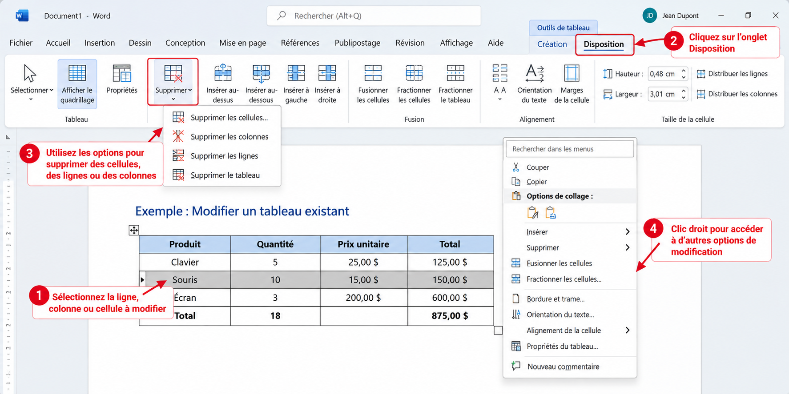
Repère visuel : sélectionnez la cellule, la ligne ou la colonne à modifier, puis utilisez l’onglet Disposition des outils de tableau ou le clic droit pour accéder aux commandes de modification.
2.4 Fusionner des cellules
Sélectionnez les cellules à réunir.
Ouvrez les outils du tableau puis l’onglet de Disposition.
Choisissez la commande Fusionner les cellules.
Utilité : la fusion est pratique pour créer un titre commun à plusieurs colonnes ou regrouper visuellement des informations.
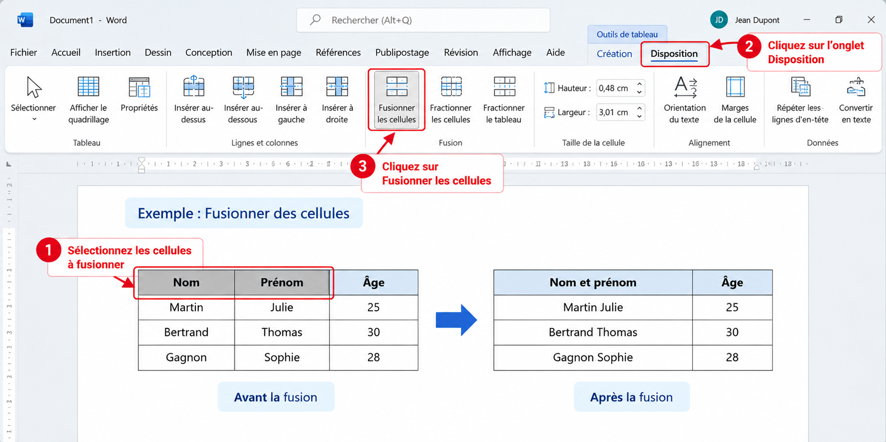
Repère visuel : sélectionnez les cellules à réunir, ouvrez l’onglet Disposition des outils de tableau, puis cliquez sur Fusionner les cellules.
2.5 Bordures et couleurs
Le cours montre comment masquer les bordures d’un tableau avec l’option Aucune bordure et comment utiliser les styles et couleurs de tableau afin d’en faciliter la lecture.
Conseil : les couleurs doivent aider à distinguer les titres et les groupes d’informations sans surcharger le document.
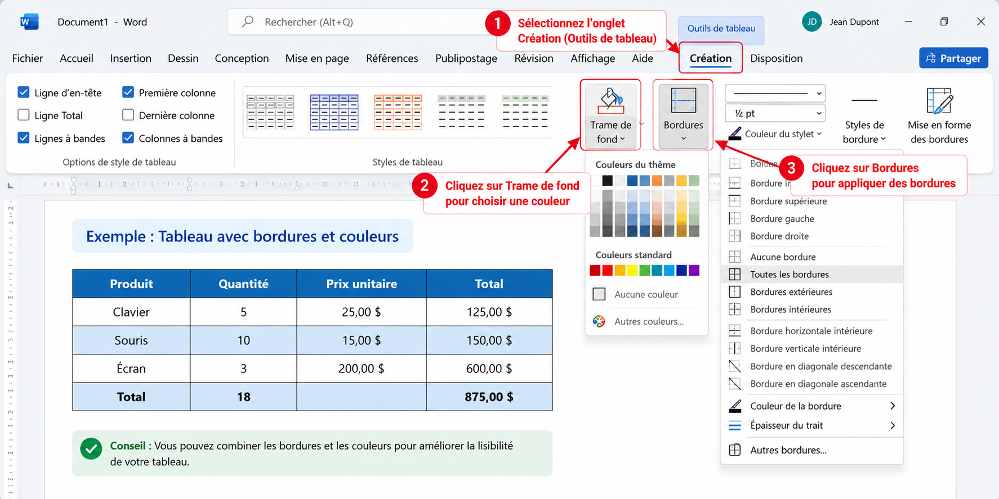
Repère visuel : sélectionnez le tableau, ouvrez l’onglet Création des outils de tableau, puis utilisez Trame de fond pour la couleur et Bordures pour définir les contours du tableau.
2.6 Largeur et hauteur
Word permet d’uniformiser la largeur des colonnes et la hauteur des lignes, ou de les ajuster individuellement en déplaçant leurs limites.
Sélectionnez les lignes ou colonnes concernées pour leur donner des dimensions régulières.
Pour un ajustement manuel, placez le pointeur sur une bordure puis faites-la glisser.
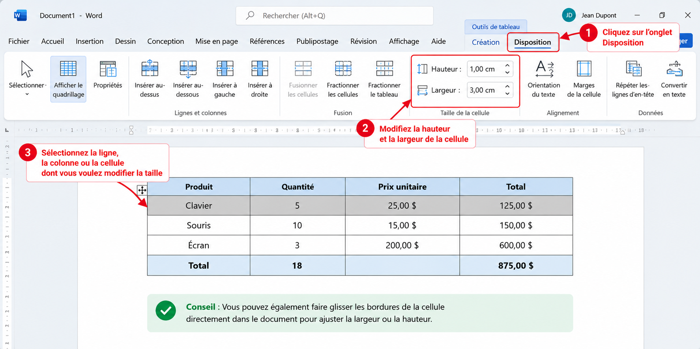
Repère visuel : sélectionnez la ligne, la colonne ou la cellule concernée, ouvrez l’onglet Disposition des outils de tableau, puis ajustez les valeurs Hauteur et Largeur dans le groupe Taille de la cellule.
ÉTAPE 3 • FORMES
Insérer des formes prédéfinies
Word contient une bibliothèque de formes prédéfinies : carré, rectangle, cercle, triangle et plusieurs autres formes.
Ouvrez l’onglet Insertion.
Dans le groupe Illustrations, cliquez sur Formes.
Choisissez la forme souhaitée, par exemple Rectangle.
Cliquez et faites glisser dans le document pour dessiner la forme.
Insertion > Illustrations > Formes > Rectangle
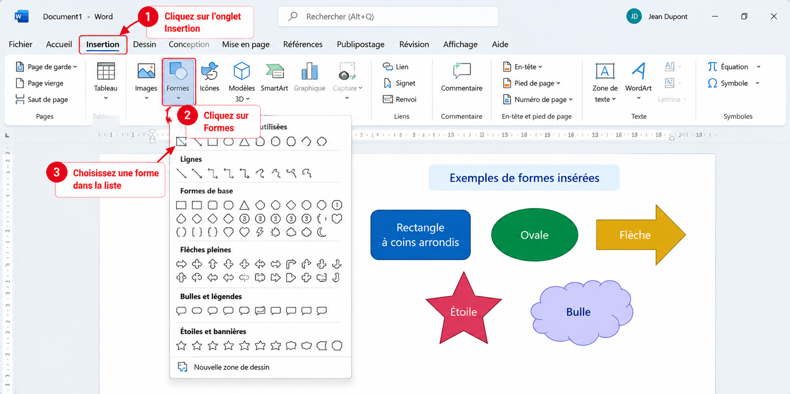
Repère visuel : ouvrez Insertion > Formes, choisissez une forme dans la galerie, puis cliquez et faites glisser dans le document pour la dessiner.
ÉTAPE 4 • EN-TÊTE & PIED DE PAGE
En-tête et pied de page
Les en-têtes et les pieds de page sont des zones situées dans les marges haute et basse des pages. Ils peuvent contenir du texte ou des éléments graphiques.
Informations courantesNuméro de page, date et heure.
IdentificationLogo, titre du document, nom du fichier ou auteur.
OptionsPremière page différente et réglage des marges.
4.1 Insérer un en-tête ou un pied de page
Cliquez sur Insertion.
Choisissez En-tête ou Pied de page.
Sélectionnez l’un des modèles prédéfinis proposés.
Saisissez ou modifiez le contenu souhaité.
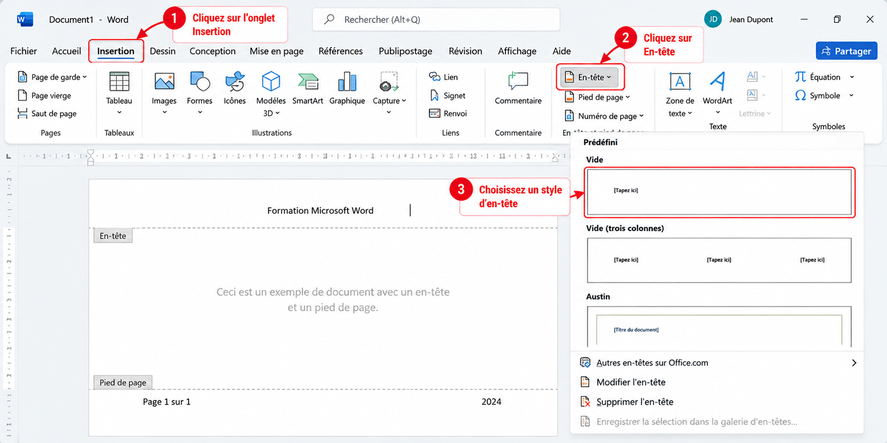
Repère visuel : ouvrez l’onglet Insertion, choisissez En-tête ou Pied de page, puis sélectionnez un modèle prédéfini et saisissez votre contenu.
4.2 Insérer un saut de section
Un saut de section permet de diviser un document Word en plusieurs parties indépendantes. Chaque section peut ensuite avoir sa propre mise en page, par exemple une orientation, des marges, des colonnes, un en-tête, un pied de page ou une numérotation différents.
Mise en page > Sauts > Sauts de section
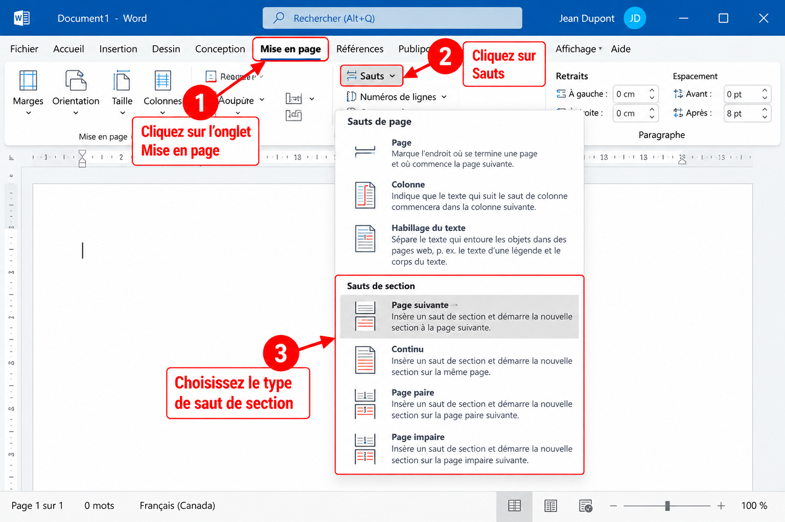
Repère visuel : ouvrez Mise en page > Sauts, puis choisissez le type souhaité dans la partie Sauts de section : Page suivante, Continu, Page paire ou Page impaire.
Placez le curseur à l’endroit où la nouvelle section doit commencer.
Ouvrez l’onglet Mise en page.
Cliquez sur Sauts.
Dans la partie Sauts de section, choisissez le type de saut adapté.
Page suivanteCommence la nouvelle section sur la page suivante.
ContinuCommence une nouvelle section sur la même page.
Page paire / impaireCommence la section sur la prochaine page paire ou impaire.
À retenir : un saut de page déplace simplement le contenu vers une nouvelle page, tandis qu’un saut de section permet aussi de modifier la mise en page d’une partie du document sans affecter les autres sections.
Exemple : utilisez un saut de section pour mettre une seule page en orientation paysage au milieu d’un document en orientation portrait.
4.3 Personnaliser
Les outils de création permettent notamment d’ajouter un numéro de page, une date et une heure actualisables, d’utiliser une première page différente et de régler la distance de l’en-tête ou du pied de page.
Notion du cours : pour afficher le nombre total de pages, Word peut utiliser un champ spécifique tel que NumPages.
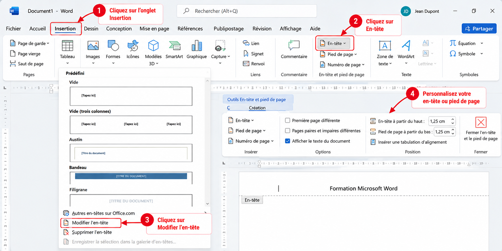
Repère visuel : ouvrez Insertion > En-tête, choisissez Modifier l’en-tête, puis utilisez les outils En-tête et pied de page pour personnaliser les options, la position et le contenu.
ÉTAPE 5 • IMAGES
Insérer une image
Une image stockée sur l’ordinateur peut être insérée directement à l’emplacement du curseur.
Cliquez dans le document à l’endroit prévu pour l’image.
Dans l’onglet Insertion, cliquez sur Images.
Parcourez les dossiers de l’ordinateur et sélectionnez l’image.
Cliquez sur Insérer.
Résultat : l’image apparaît dans le document à l’emplacement prévu. Elle peut ensuite être redimensionnée, déplacée et mise en forme.
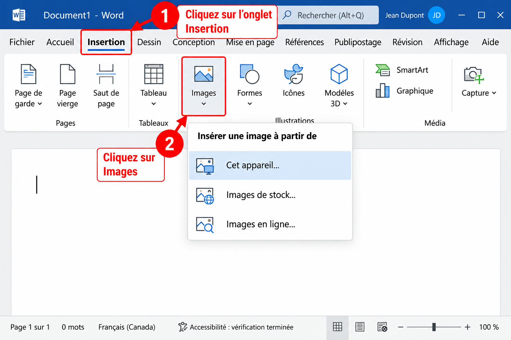
Repère visuel : ouvrez Insertion > Images, choisissez la source de l’image puis sélectionnez le fichier à insérer.
ÉTAPE 6 • MISE EN FORME
Habillage et styles d’image
Word permet de contrôler la relation entre une image et le texte qui l’entoure, puis d’appliquer différents effets visuels à l’image.
6.1 Positionner l’image dans le texte
Cliquez sur l’image pour la sélectionner.
Ouvrez l’onglet Format.
Dans le groupe Organiser, cliquez sur Habillage.
Choisissez le type d’habillage adapté à votre mise en page.
CarréLe texte suit une zone rectangulaire autour de l’image.
RapprochéLe texte épouse plus étroitement les contours de l’image.
Autres optionsAccéder à davantage de réglages d’habillage du texte.
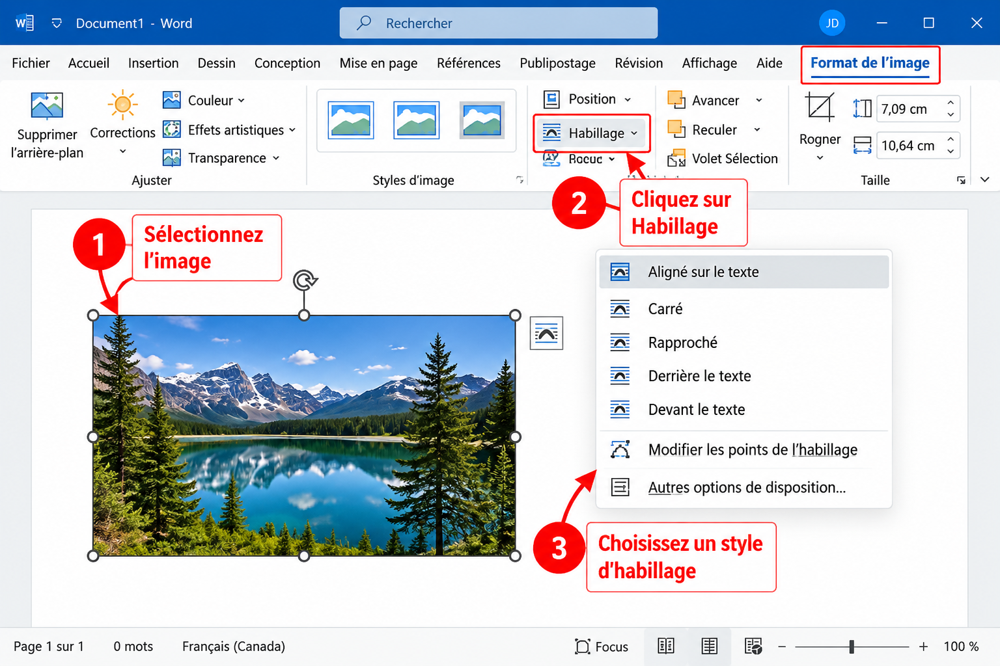
Repère visuel : sélectionnez l’image, ouvrez Format de l’image, puis choisissez un type d’habillage adapté.
6.2 Choisir un style d’image
Le cours présente les Styles d’image pour appliquer rapidement des effets tels que des bordures ou des ombres.
Sélectionnez l’image.
Cliquez sur l’onglet Format.
Dans Styles d’image, choisissez le style souhaité.
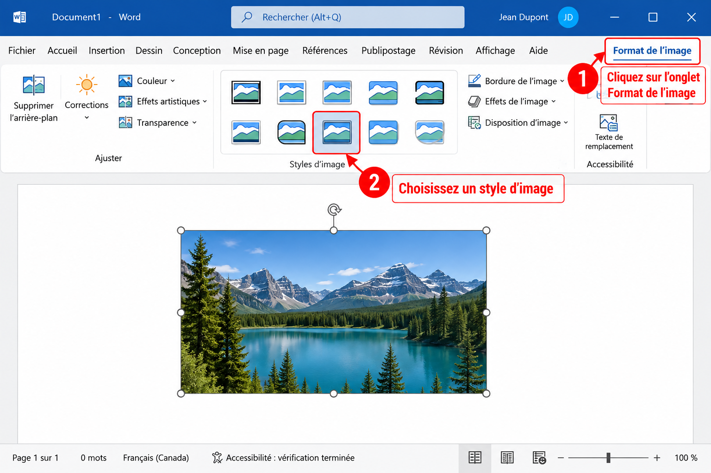
Repère visuel : sélectionnez l’image puis choisissez un modèle dans la galerie Styles d’image.
ÉTAPE 7 • SMARTART
Insérer un graphique SmartArt
Un graphique SmartArt fournit une représentation visuelle des informations afin de communiquer un message plus efficacement. Le cours cite notamment les listes graphiques, les processus, les organigrammes et des graphiques plus complexes.
Placez le curseur à l’endroit où le SmartArt doit être inséré.
Ouvrez Insertion > Illustrations > SmartArt.
Choisissez le graphique SmartArt qui convient le mieux à l’information à présenter.
Dans le Volet de texte, saisissez le contenu à inclure dans le graphique.
Lorsque la saisie est terminée, fermez le volet de texte avec le bouton X.
Bon choix : utilisez une liste pour des éléments sans ordre particulier, un processus pour une suite d’étapes et un organigramme pour représenter une structure.
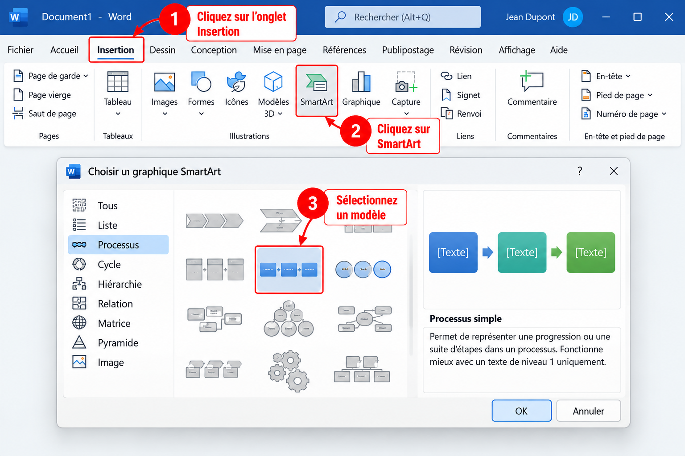
Repère visuel : ouvrez Insertion > SmartArt, choisissez une catégorie puis un modèle.
ÉTAPE 8 • ÉQUATIONS
Insertion des équations
Word permet d’insérer et de construire des équations mathématiques directement dans un document. Cette fonctionnalité est particulièrement utile pour les documents scientifiques, techniques et pédagogiques.
Insertion > Symboles > Équation
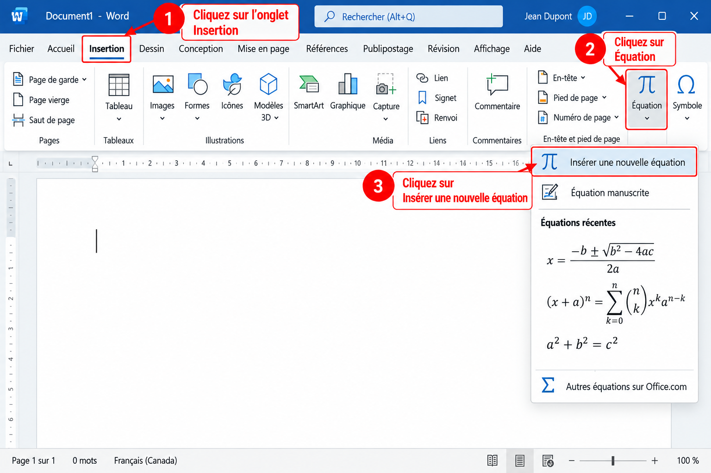
Repère visuel : ouvrez Insertion puis la commande Équation dans le groupe Symboles.
8.1 Insérer une équation
Placez le curseur à l’endroit où l’équation doit apparaître.
Ouvrez l’onglet Insertion.
Dans le groupe Symboles, cliquez sur Équation.
Choisissez une équation proposée par Word ou cliquez sur Insérer une nouvelle équation.
Saisissez ou construisez votre expression mathématique dans la zone d’équation.
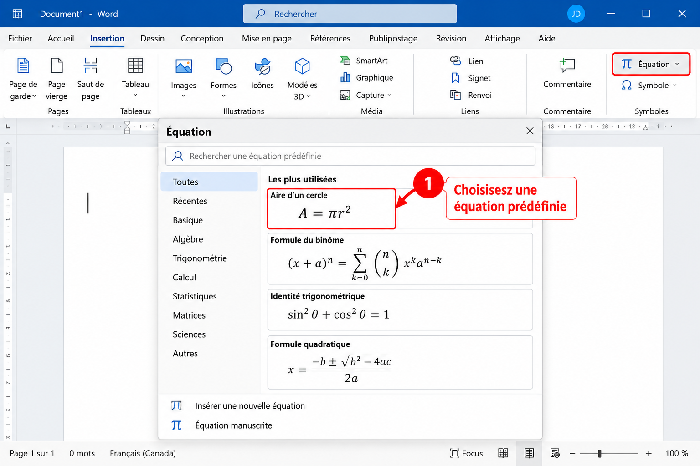
Repère visuel : choisissez une équation prédéfinie ou créez une nouvelle équation.
8.2 Construire une expression mathématique
Lorsque l’équation est sélectionnée, Word affiche les outils permettant de construire des expressions plus complexes.
FractionsCréer une fraction avec un numérateur et un dénominateur.
Indices et exposantsÉcrire par exemple x², xⁿ ou a₁.
RadicauxInsérer une racine carrée ou une racine d’ordre supérieur.
IntégralesConstruire une intégrale avec ou sans bornes.
SommesUtiliser les grands opérateurs comme Σ.
MatricesPrésenter des valeurs organisées en lignes et colonnes.
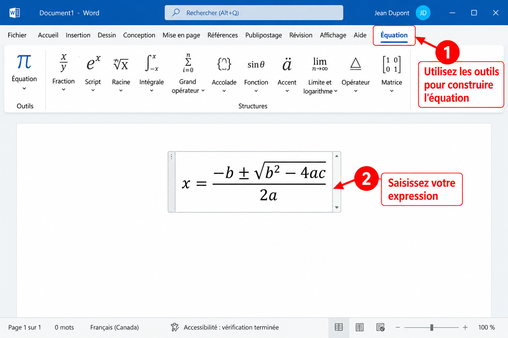
Repère visuel : utilisez les structures Fraction, Script, Radical, Intégrale et autres outils pour construire l’expression.
8.3 Exemples
Expressions à essayer dans Word :
x² + 5x + 6 = 0
(a + b) / c sous forme de fraction
√(x² + y²)
Σ xᵢ pour i allant de 1 à n
Astuce : sous Windows, le raccourci Alt + = permet d’ouvrir rapidement une nouvelle zone d’équation dans Word.
ÉTAPE 9 • GRAPHIQUES
Insertion des graphiques
Word permet d’insérer des graphiques pour représenter visuellement des données numériques. Un graphique facilite la comparaison de valeurs, l’observation d’une évolution ou la présentation d’une répartition.
Insertion > Illustrations > Graphique
9.1 Insérer un graphique
Placez le curseur à l’endroit où le graphique doit apparaître.
Ouvrez l’onglet Insertion.
Dans le groupe Illustrations, cliquez sur Graphique.
Choisissez une catégorie de graphique, puis sélectionnez le modèle souhaité.
Cliquez sur OK pour insérer le graphique dans le document.
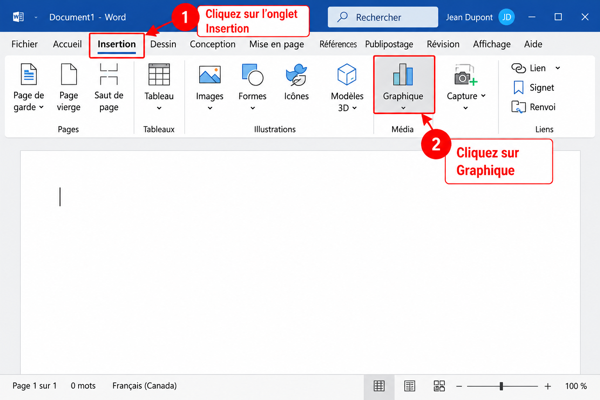
Repère visuel : ouvrez Insertion > Graphique pour démarrer l’insertion.
9.2 Choisir le type de graphique
Histogramme / ColonnesComparer plusieurs catégories ou plusieurs valeurs.
CourbesMontrer une évolution ou une tendance dans le temps.
SecteursPrésenter la répartition des différentes parties d’un ensemble.
BarresComparer des catégories avec des barres horizontales.
AiresMettre en évidence l’évolution et l’importance des valeurs.
Nuage de pointsObserver la relation entre deux séries de valeurs numériques.
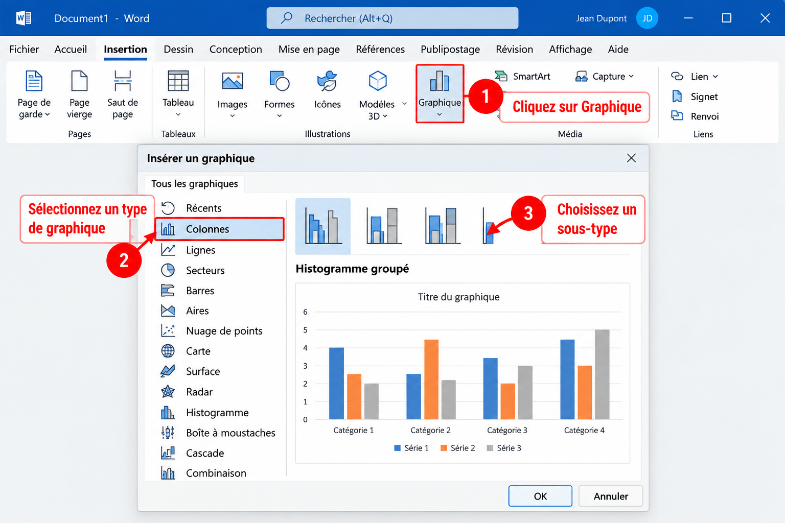
Repère visuel : sélectionnez une catégorie puis le sous-type de graphique adapté.
9.3 Modifier les données du graphique
Après l’insertion, Word affiche une feuille de données associée au graphique. Les valeurs d’exemple peuvent être remplacées par les données du document.
Remplacez les catégories et les valeurs d’exemple par vos propres données.
Ajoutez ou supprimez des lignes et des colonnes si nécessaire.
Fermez la feuille de données lorsque la saisie est terminée.
Le graphique se met à jour automatiquement selon les nouvelles valeurs.
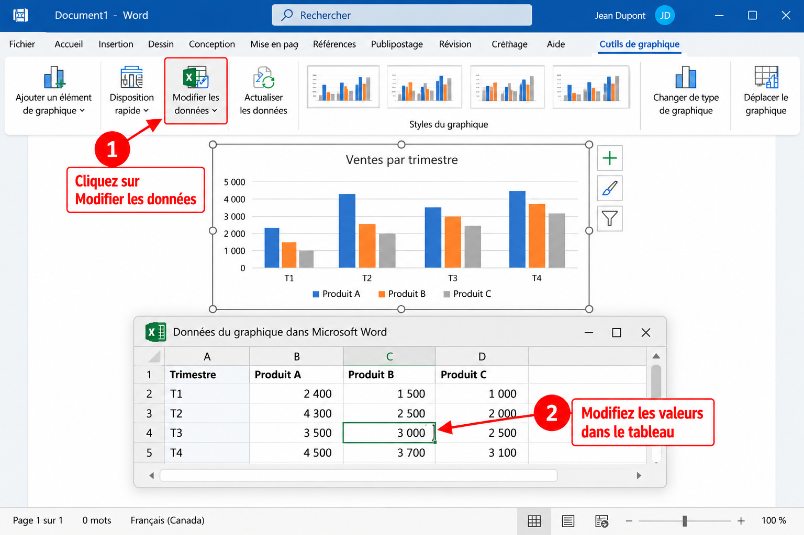
Repère visuel : ouvrez les données du graphique et remplacez les valeurs d’exemple.
9.4 Personnaliser le graphique
Une fois le graphique sélectionné, Word affiche des outils permettant de modifier sa présentation.
Modifier le titre du graphique.
Afficher ou masquer la légende.
Ajouter des étiquettes de données.
Changer le style et la présentation générale.
Modifier le type de graphique si la représentation choisie n’est plus adaptée.
À retenir : choisissez le type de graphique en fonction du message à communiquer. Pour comparer des catégories, privilégiez les colonnes ou les barres ; pour montrer une évolution, utilisez plutôt une courbe.
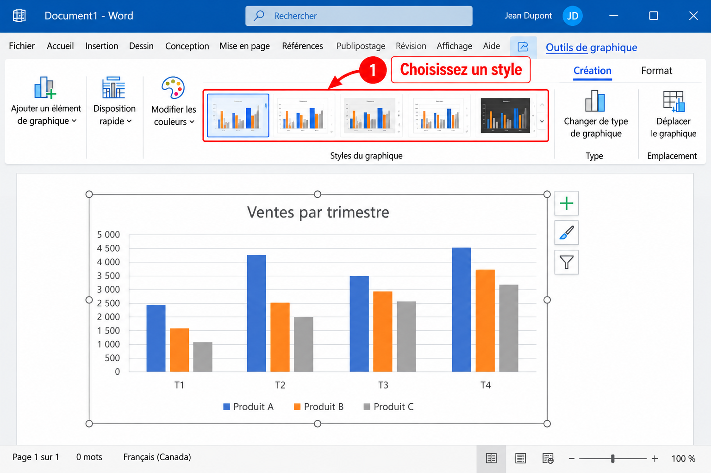
Repère visuel : utilisez les styles et éléments du graphique pour personnaliser sa présentation.
9.5 Petit exercice
Créez un graphique à partir des données suivantes : Janvier : 12, Février : 18, Mars : 15 et Avril : 24. Utilisez un histogramme ou un graphique en colonnes, puis ajoutez le titre Évolution des ventes.
ÉTAPE 10 • ZONE DE TEXTE
Insérer une zone de texte
Une zone de texte permet de placer un bloc de texte indépendant dans le document. Elle peut être déplacée, redimensionnée et mise en forme séparément du texte principal.
Insertion > Texte > Zone de texte
Ouvrez l’onglet Insertion.
Dans le groupe Texte, cliquez sur Zone de texte.
Choisissez un modèle proposé ou sélectionnez l’option permettant de dessiner une zone de texte.
Saisissez votre texte dans la zone créée.
Déplacez ou redimensionnez la zone selon la mise en page souhaitée.
Utilité : les zones de texte sont pratiques pour créer des encadrés, des informations importantes, des citations ou des blocs placés librement sur la page.
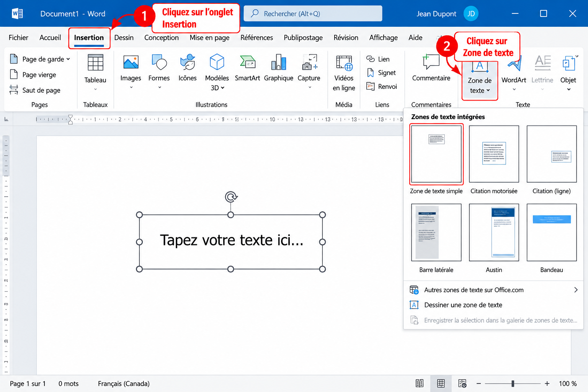
Repère visuel : ouvrez Insertion > Zone de texte, choisissez ou dessinez une zone puis saisissez le texte.
ÉTAPE 11 • SYMBOLES
Insérer un symbole
La commande Symbole permet d’ajouter des caractères qui ne sont pas toujours disponibles directement sur le clavier, par exemple des symboles mathématiques, monétaires ou typographiques.
Insertion > Symboles > Symbole
Placez le curseur à l’endroit où le symbole doit être inséré.
Ouvrez l’onglet Insertion.
Dans le groupe Symboles, cliquez sur Symbole.
Choisissez un symbole dans la liste ou ouvrez Autres symboles pour afficher davantage de caractères.
Sélectionnez le symbole souhaité puis cliquez sur Insérer.
Repère visuel : ouvrez Insertion > Symbole, puis choisissez le caractère souhaité.
ÉTAPE 12 • NUMÉRO DE PAGE
Insérer des numéros de page
Word permet d’ajouter automatiquement un numéro de page dans l’en-tête, le pied de page ou une autre position prédéfinie.
Insertion > En-tête et pied de page > Numéro de page
Ouvrez l’onglet Insertion.
Cliquez sur Numéro de page.
Choisissez l’emplacement : Haut de page, Bas de page ou une autre position proposée.
Sélectionnez un modèle de numérotation.
Fermez les outils d’en-tête et de pied de page lorsque la mise en forme est terminée.
À savoir : les options de numérotation permettent aussi d’adapter le format des numéros selon les besoins du document.
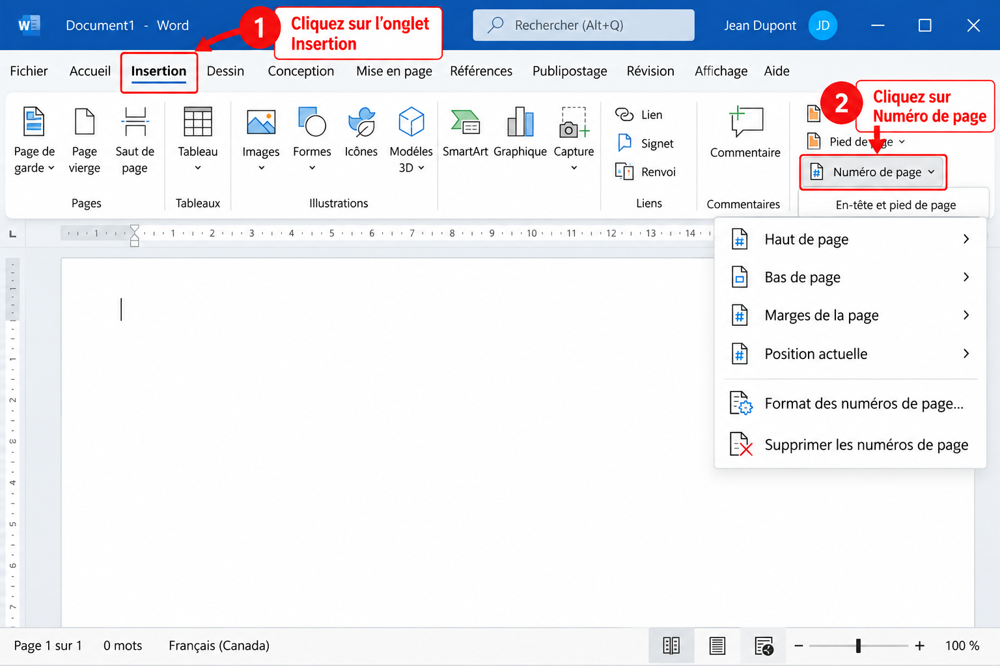
Repère visuel : ouvrez Insertion > Numéro de page, choisissez l’emplacement et le modèle.
ÉTAPE 13 • LIENS
Insérer un lien hypertexte
Un lien hypertexte permet de rendre un texte ou un objet cliquable afin d’ouvrir une page Web, un fichier ou une autre destination.
Insertion > Liens > Lien
Sélectionnez le texte ou l’objet qui doit devenir cliquable.
Ouvrez l’onglet Insertion puis cliquez sur Lien.
Indiquez l’adresse ou choisissez la destination du lien.
Validez pour créer le lien hypertexte.
Exemple : vous pouvez transformer le texte « Site du cours » en lien vers une ressource Web.
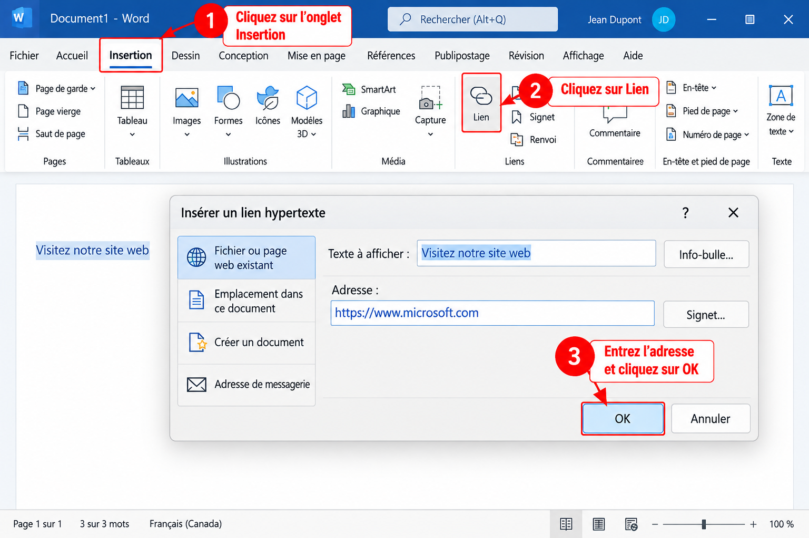
Repère visuel : sélectionnez le texte, ouvrez Insertion > Lien, saisissez l’adresse puis validez.
ÉTAPE 14 • PAGE VIERGE
Insérer une page vierge
La commande Page vierge ajoute une nouvelle page vide dans le document à partir de la position actuelle du curseur.
Insertion > Pages > Page vierge
Placez le curseur à l’endroit où vous souhaitez ajouter une nouvelle page.
Ouvrez l’onglet Insertion.
Dans le groupe Pages, cliquez sur Page vierge.
Word ajoute une nouvelle page vide dans le document.
Conseil : utilisez cette commande lorsque vous souhaitez commencer une nouvelle partie du document sur une page séparée.
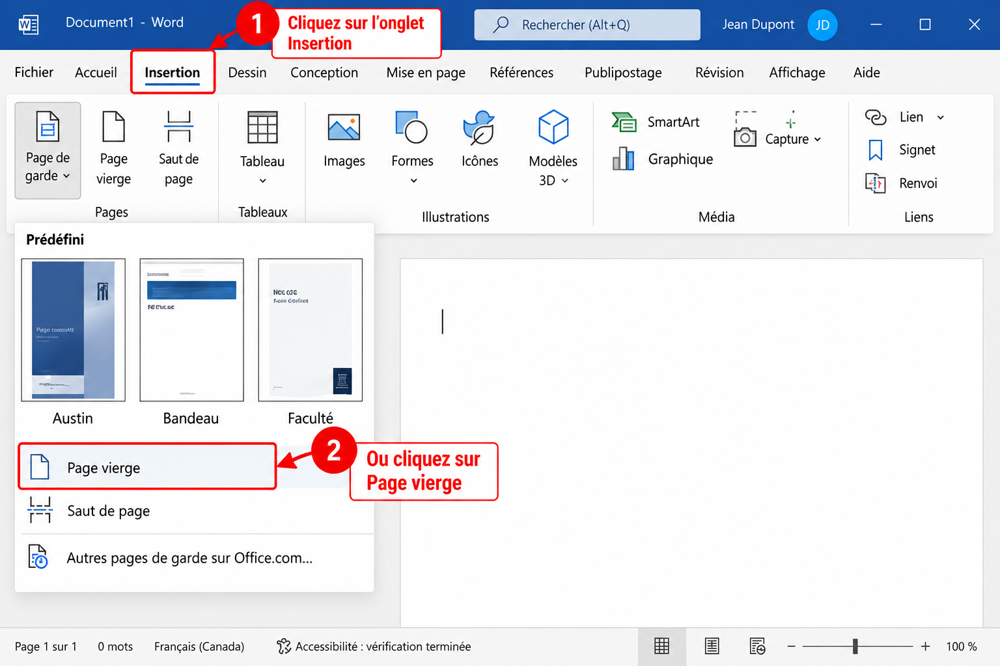
Repère visuel : ouvrez Insertion > Pages > Page vierge pour ajouter une nouvelle page.
ÉTAPE 15 • PAGE DE GARDE
Insérer une page de garde
Une page de garde est une première page conçue pour présenter le document. Word propose plusieurs modèles prédéfinis qui peuvent ensuite être personnalisés.
Insertion > Pages > Page de garde
Ouvrez l’onglet Insertion.
Dans le groupe Pages, cliquez sur Page de garde.
Choisissez un modèle dans la galerie proposée.
Remplacez les zones de texte du modèle par vos propres informations.
TitreNom principal du document.
AuteurNom de la personne ou de l’organisation.
Informations complémentairesDate, sous-titre, cours ou autre information utile.
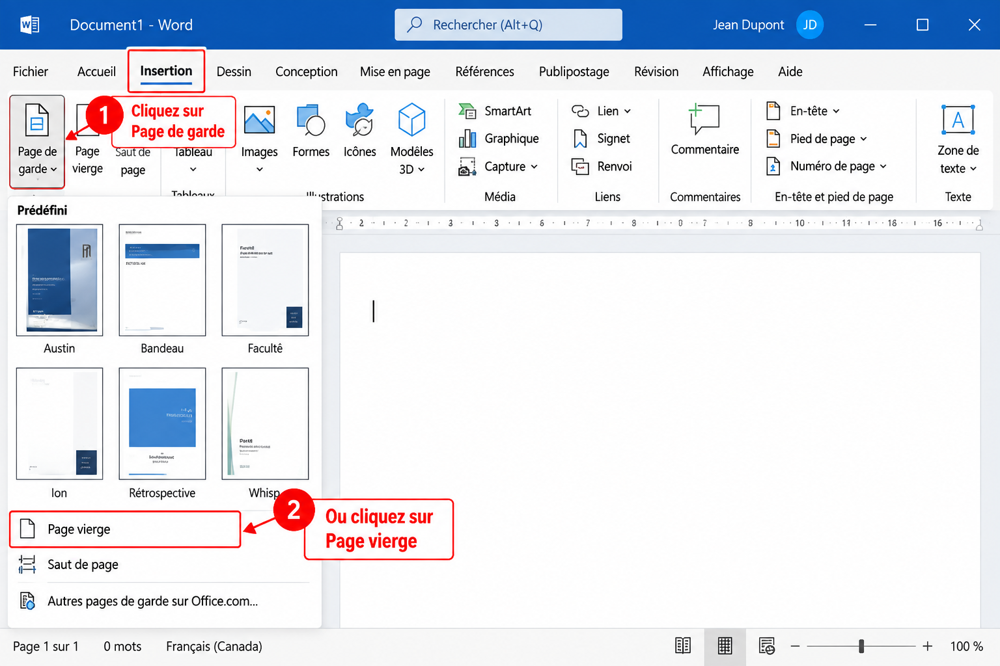
Repère visuel : ouvrez Insertion > Pages > Page de garde puis choisissez un modèle.
SÉRIE D’EXERCICES N°02
Exercices pratiques — Insertion et mise en page
Réalisez les exercices suivants dans Microsoft Word. Les fichiers nécessaires sont fournis avec cette page dans le dossier assets/source/course02/exercises.
Insérez une équation avec le symbole de somme Σ et ajoutez l’image de la rose dans la cellule correspondante.
Tableau 2 — Tableau des tailles : construisez les lignes et colonnes, ajustez leurs dimensions et fusionnez/décalez les cellules afin d’obtenir la forme illustrée. Appliquez la trame grise aux cellules indiquées.
Tableau 3 — Styles des tableaux : créez le tableau avec les colonnes Janvier, Février, Mars et TOTAL et les lignes EST, OUEST, SUD et TOTAL.
Saisissez les valeurs du modèle, appliquez une couleur violette à la ligne d’en-tête et une trame grise à la première colonne.
Utilisez une formule Word pour calculer automatiquement les totaux des lignes et des colonnes.
Ajoutez une forme de type bulle à droite du troisième tableau avec le texte : « Utiliser une Formule pour calculer les totaux automatiquement ».
Comparez votre document au résultat attendu et corrigez les bordures, alignements, tailles et couleurs.
TableauxFusionSymbolesImageÉquationFormuleForme
👁 Voir le résultat attendu
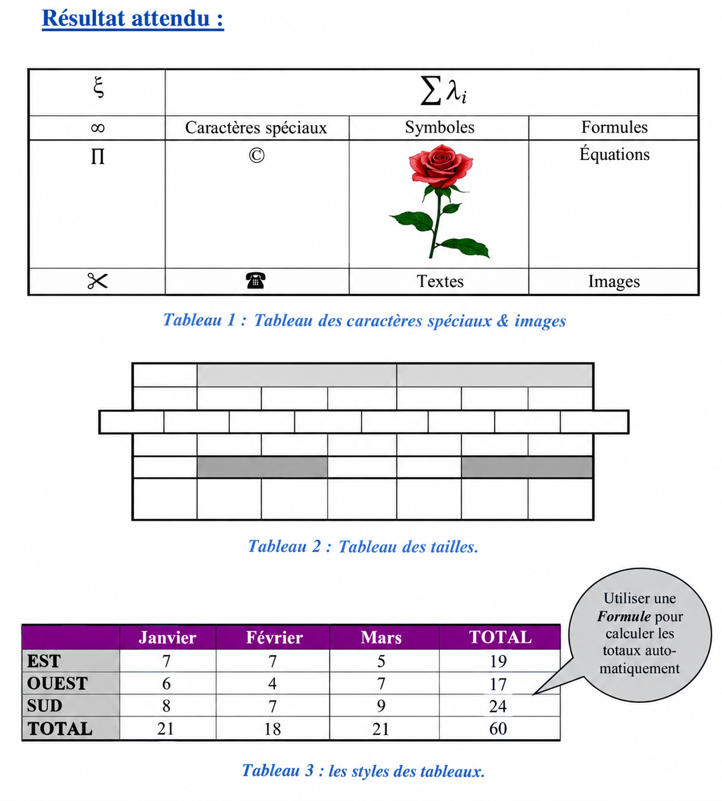
Résultat attendu : reproduisez les trois tableaux en respectant la structure, les symboles, l’image, les fusions de cellules, les couleurs et les totaux.
PARTIE 1 • EXERCICE 02
Manipulation des SmartArt
🎯 ObjectifReproduire deux compositions SmartArt en respectant structure, texte, couleurs et disposition.
📁 Ressources3 images fournies dans le dossier de l’exercice
Sur une nouvelle page du document Partie 1, ouvrez Insertion > SmartArt.
Figure 1 : créez un SmartArt composé de trois engrenages reliés par des flèches courbes.
Saisissez dans les engrenages : Galette terminale, Galette annexe et Galette principale.
Appliquez une couleur orange aux engrenages et ajustez leur taille pour obtenir une composition proche du modèle.
Figure 2 : insérez un second SmartArt de type hexagonal/alvéoles.
Saisissez les noms Agrigente, Athènes et Kos, puis appliquez des couleurs différentes aux formes.
Utilisez les trois images fournies dans le dossier de l’exercice et placez-les dans les hexagones prévus pour les photos.
Redimensionnez et alignez les éléments afin de reproduire la disposition du résultat attendu.
{kind=link}
{kind=link}
{kind=link}
{kind=link}
{kind=link}